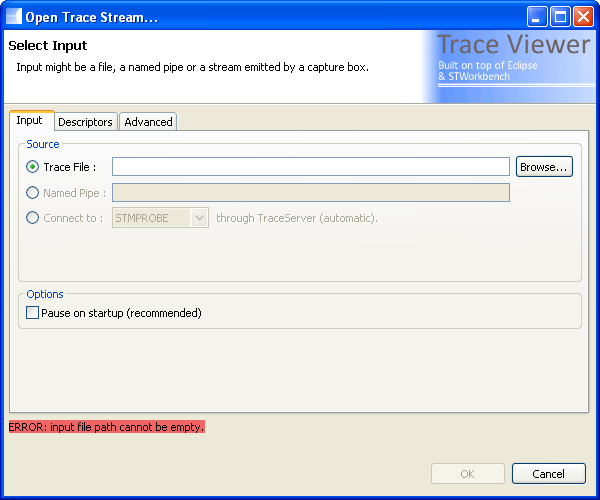
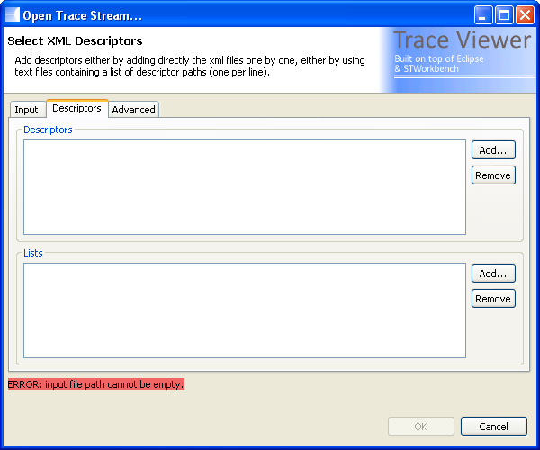
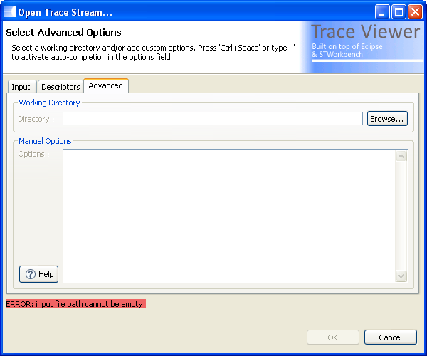

Trace Viewer Workbench
Documentation > Getting Started
|
|
Trace Viewer Workbench Documentation > Getting Started |
Requirements
Prior to using decoder/Trace Viewer you should have either collected a trace file or be planning to collect a trace using one of the supported capture boxes (with STMProbe or Lauterbach Trace32 for example).
How it works
The Trace Viewer workbench is a GUI tool based on Eclipse that wraps the decoder executable.
This is to say that when you start parsing a trace file, the Trace Viewer workbench executes the decoder and then read its outputs from a socket. It parses the descriptors to add context to the data displayed (such as link to source, name displaying, ...) and computes some basic statistics (source annotations only, when available).
Collect data from a trace file
You have 3 ways to collect data with decoder:
Using Trace Viewer GUI.
Using Trace Viewer from your shell.
Using decoder directly from your shell.
1. Using Trace Viewer GUI

This can be done in a few steps detailed below:
Launch Trace Viewer Workbench using the trcviewer.[sh|bat] script.
Click on the "Open" button of the Trace Viewer view or select "File > Open Trace Stream..." in the menu or press "CTRL+O". A dialog box should appear.
In this dialog box you can configure the options of the decoder instance that will be executed. The configuration is divided in multiple tabs.
Input Tab:

Select a source for your trace data:
Trace File
Use a binary file as input. Recognized formats are STPv1 from a Combiprobe box through Trace32, special format from "Other" box and MTT trace format. Enter the path to your trace file in the text field.
Named Pipe
Use a named pipe as input. Recognized formats are the same as for the file input. Enter the name of your pipe in the text field (for example "\\.\pipe\mypipe" on windows).
Capture Box Connection
Connect to a capute box stream (through TraceServer). The use of the TraceServer is transparent to the user, by default the TraceServer will be started (and managed) automatically by Trace Viewer (see "Tools > Preferences > Trace Viewer > Trace Server" to modify this behaviour). You can then select one of following targets:
COMBIPROBE: connect to a Combiprobe box through a named pipe (same as using the named pipe option).
OTHER: connect to a "Other" box. No more options required.
STMPROBE: connect to a STMProbe box. The location of the FPGA driver directory is requested.
[Must be activated in the preferences] FILE_COMBIPROBE: use a Combiprobe generated file as input (same as using the trace file option).
[Must be activated in the preferences] FILE_OTHER: use a "Other" box generated file as input (same as using the trace file option).
[Must be activated in the preferences] FILE_TS_STP: debug purpose only, use a STP file dumped by the TraceServer as input (cannot be achieved using the trace file option).
Select the options your trace data:
Pause on startup
The viewer will start the parsing in pause mode which is slightly faster but does not display live results. For more information please refer to the Tips section at the bottom of this page.
Descriptors Tab:

Enter the XML descriptors to use (xml files, supported types are OST and CTDT in version 2.7.0, SBAG descriptors planned in future releases)
Descriptors (-d|--descriptor option):
Add the descriptors you want to use in this list.
Lists (-D|--descriptors-file option):
Add here your descriptors list, this is to say a file with one descriptor path per line, relative paths are considered relative to the list file (this and the above list are added to the descriptors of decoder).
Advanced Tab:

Enter the advanced options to use
Working Directory:
Optional field to set the working directory of decoder.
Manual Options:
Optional field to set advanced options for the decoder. The "Help" button displays the list of availabe options. You might press 'CTRL+SPACE' to activate auto-completion for your options.
If the options are correct, the status line (at the bottom of the window) should be green, if it is not the case the cause of the error (red) or warning (orange) is detailed.
Click the OK button, the parsing starts or waits for a pipe connection in pipe mode, or wait for a TraceServer connection in TraceServer mode (success is achieve when "INFO: Connected to TraceServer" is displayed in blue in the console view). The console view should always display a message saying that the socket connection with the workbench is ok (blue message) and it also displays the command-line that has been executed.

2. Using Trace Viewer from command-line
Trace Viewer in command-line mode means that you use command-line options to set-up which trace will be parsed when the GUI will appear.
The steps are described below:
Launch:
Launch Trace Viewer.[sh|bat] followed by "--decoder" option and then the decoder options you want to use ("bin/decoder --help" will show you the available options for this task, or see below for a list of options available in v0.10.0).
Result:
As a result the GUI is opening normally and when it is openend the parsing starts directly, without having to click on the "Open" button
3. Using the decoder executable from command-line
The decoder executable is located in the "bin" directory of your install.
You can get the full list of options with the "--full-help" option. You can get even more details on some options using "--detailed-help" instead.
Tips
Pause on Startup:
Pause the viewer before executing decoder and shows a progress bar until the execution is over, then the viewer is refreshed with the full parsed data (no live display of the events).
While pause is active the parsing speed is slightly increased, so this option is recommended if you want to parse a file and see the result only when it is complete (resume/refresh is automatically done at the end of the parsing).
Note that even if this option is activated you can resume the live display view by clicking on the resume button. If you do so, the automatic resume at the end of the parsing is deactivated.
Contextual Help:
Press F1 in a focused view to get a quick link to the view documentation.


|
|
© STMicroelectronics and others 2010, 2011, 2012. All rights reserved. |